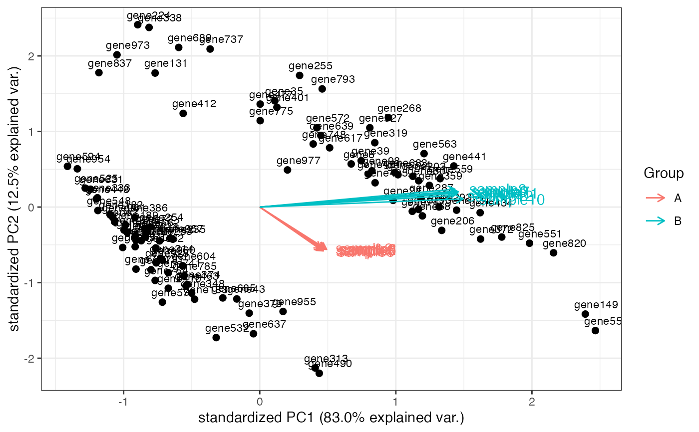
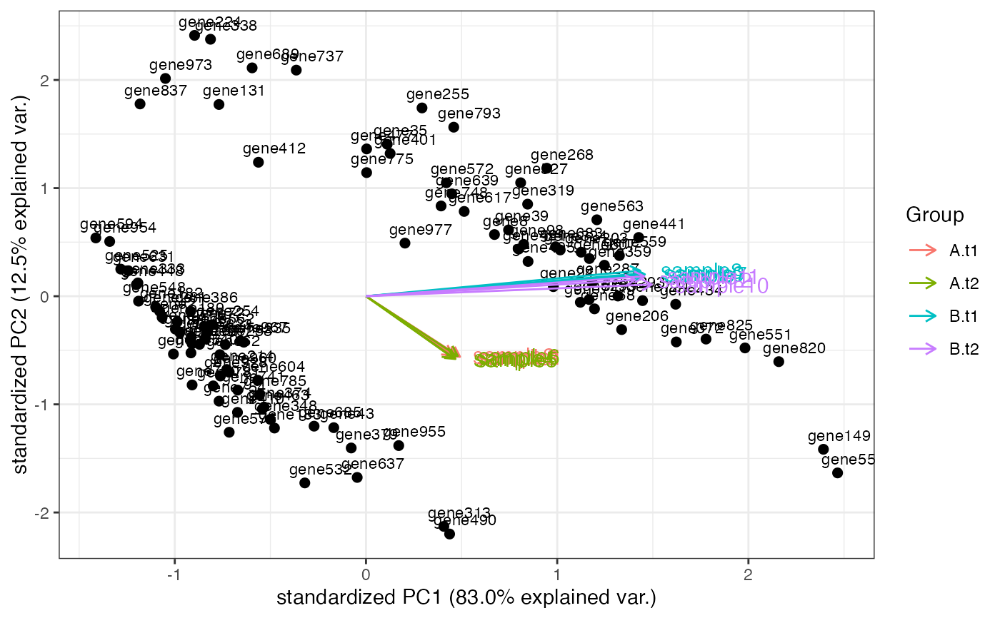

Computes and plots the principal components of the genes, eventually displaying the samples as in a typical biplot visualization.
genespca(
x,
ntop,
choices = c(1, 2),
arrowColors = "steelblue",
groupNames = "group",
biplot = TRUE,
scale = 1,
pc.biplot = TRUE,
obs.scale = 1 - scale,
var.scale = scale,
groups = NULL,
ellipse = FALSE,
ellipse.prob = 0.68,
labels = NULL,
labels.size = 3,
alpha = 1,
var.axes = TRUE,
circle = FALSE,
circle.prob = 0.69,
varname.size = 4,
varname.adjust = 1.5,
varname.abbrev = FALSE,
returnData = FALSE,
coordEqual = FALSE,
scaleArrow = 1,
useRownamesAsLabels = TRUE,
point_size = 2,
annotation = NULL
)A DESeqTransform object, with data in assay(x),
produced for example by either rlog or
varianceStabilizingTransformation
Number of top genes to use for principal components, selected by highest row variance
Vector of two numeric values, to select on which principal components to plot
Vector of character, either as long as the number of the samples, or one single value
Factor containing the groupings for the input data. Is efficiently chosen as the (interaction of more) factors in the colData for the object provided
Logical, whether to additionally draw the samples labels as in a biplot representation
Covariance biplot (scale = 1), form biplot (scale = 0). When scale = 1, the inner product between the variables approximates the covariance and the distance between the points approximates the Mahalanobis distance.
Logical, for compatibility with biplot.princomp()
Scale factor to apply to observations
Scale factor to apply to variables
Optional factor variable indicating the groups that the observations belong to. If provided the points will be colored according to groups
Logical, draw a normal data ellipse for each group
Size of the ellipse in Normal probability
optional Vector of labels for the observations
Size of the text used for the labels
Alpha transparency value for the points (0 = transparent, 1 = opaque)
Logical, draw arrows for the variables?
Logical, draw a correlation circle? (only applies when prcomp was called with scale = TRUE and when var.scale = 1)
Size of the correlation circle in Normal probability
Size of the text for variable names
Adjustment factor the placement of the variable names, >= 1 means farther from the arrow
Logical, whether or not to abbreviate the variable names
Logical, if TRUE returns a data.frame for further use, containing the selected principal components for custom plotting
Logical, default FALSE, for allowing brushing. If TRUE, plot using equal scale cartesian coordinates
Multiplicative factor, usually >=1, only for visualization purposes, to allow for distinguishing where the variables are plotted
Logical, if TRUE uses the row names as labels for plotting
Size of the points to be plotted for the observations (genes)
A data.frame object, with row.names as gene identifiers (e.g. ENSEMBL ids)
and a column, gene_name, containing e.g. HGNC-based gene symbols
An object created by ggplot, which can be assigned and further customized.
The implementation of this function is based on the beautiful ggbiplot
package developed by Vince Vu, available at https://github.com/vqv/ggbiplot.
The adaptation and additional parameters are tailored to display typical genomics data
such as the transformed counts of RNA-seq experiments
library(DESeq2)
dds <- makeExampleDESeqDataSet_multifac(betaSD_condition = 3, betaSD_tissue = 1)
rlt <- rlogTransformation(dds)
groups <- colData(dds)$condition
groups <- factor(groups, levels = unique(groups))
cols <- scales::hue_pal()(2)[groups]
genespca(rlt, ntop=100, arrowColors = cols, groupNames = groups)

groups_multi <- interaction(as.data.frame(colData(rlt)[, c("condition", "tissue")]))
groups_multi <- factor(groups_multi, levels = unique(groups_multi))
cols_multi <- scales::hue_pal()(length(levels(groups_multi)))[factor(groups_multi)]
genespca(rlt, ntop = 100, arrowColors = cols_multi, groupNames = groups_multi)
